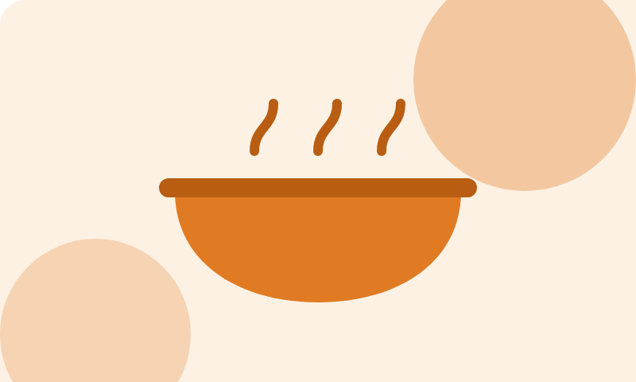

- Alimentação
- Últimas vagas
Cozinha Solidária
Refeições nutritivas servidas de segunda a sábado para famílias da Zona Leste de Manaus.
Guia visual da plataforma do Instituto Mãos que Semeiam. Reúne as variáveis (cores, tipografia e espaçamentos) e os componentes prontos para reaproveitar em qualquer página, inclusive por quem vai integrar o site a um back-end.
Todos os valores vêm de css/variaveis.css. Os componentes estão em css/componentes.css.
12 variáveis tiradas do logotipo. Todas as combinações de texto passam no nível AA da WCAG (4,5:1).
#1F6F4A#14492F#E6F2EA#F2A541#8A4B00#1F2A24#4A5A51#FFFFFF#F8F4EA#D5DDD8#B3261E#1E7A3EEscala modular 1,25 a partir de 16px, em rem.
--fonte-xxl · 39px · h1Semear--fonte-xl · 31px · h2Semear--fonte-lg · 25px · h3Semear--fonte-md · 20px · h4Semear--fonte-base · 16px · textoCada pessoa carrega uma semente de transformação.--fonte-xs · 14px · legendasLegendas, dicas de formulário e badges.Escala de 8px.
--esp-1 · 4px--esp-2 · 8px--esp-3 · 16px--esp-4 · 24px--esp-5 · 32px--esp-6 · 48px--esp-7 · 64pxEstados: hover (escurece, sobe 2px e ganha sombra), foco pelo teclado (anel âmbar de 3px), active (afunda 1px) e disabled (50% de opacidade).
Variações
Estado desabilitado
Categorizam os projetos e mostram o status de vagas e campanhas. O texto sempre está presente; a cor e o ícone só reforçam.
Categorias
Status

Refeições nutritivas servidas de segunda a sábado para famílias da Zona Leste de Manaus.
Mensagens dentro da página. Cada tipo tem cor, ícone e título próprios, e os de erro usam role="alert" para o leitor de tela anunciar na hora.
Informação
Campos marcados com * são obrigatórios. O cadastro leva cerca de 3 minutos.
Cadastro recebido
Obrigado! Nossa equipe vai entrar em contato em até 3 dias úteis.
Atenção
A campanha Material Escolar termina em 5 dias. Ainda faltam 28% da meta.
Não foi possível enviar
Confira os 2 campos destacados em vermelho: CPF e telefone.
Digite nos campos e saia deles: a borda, o ícone e a mensagem mudam só depois da interação.
O modal usa o elemento nativo <dialog>: prende o foco, fecha com Esc e escurece o fundo. O toast é uma notificação que não interrompe a navegação e some sozinha em 5 segundos.